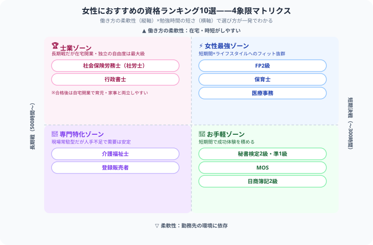

女性におすすめ資格ランキング2026｜キャリアアップ・再就職・副業に活かせる国家資格まとめ
「ライフステージが変わっても自分らしく働き続けたい！育児や家事のスキマ時間で取れる、本当に再就職や副業に強い資格ってどれなんだろう……」と悩んでテキストを検索した瞬間……『うわっ、なんじゃこりゃ、資格によって働き方の柔軟性が違いすぎてどれを選べばいいか分からんわ！』とフリーズしていませんか？（笑）
毎日会計勉強を続け、目標から逆算してタイパを極め続けている僕の視点から、限られた時間の中で確実に人生の盾を回収できる【本当に価値のある女性向け10資格】を、ガチの本音主観で熱くナビゲートします！
最後まで読んでもらえたら、この下にある【いいねボタン】をポチッと押してもらえると、めちゃくちゃ励みになります！それでは、一緒に相性の良い武器を探しに行きましょう！
女性に人気の資格を選ぶ3つのポイント
僕自身、勉強時間をどう配分するかは毎日シビアに考えています。難関資格に全ベットしている僕だからこそ言えますが、女性の資格選びは次の3つのポイントで見極めるのが鉄則です。
- ライフステージに対応できるか：育児・介護に合わせた時短・パート求人が多い職種
- 独占業務があるか：資格なしでは働けない職種は需要が安定する
- 独学・在宅で取得できるか：スクール代がかからず、隙間時間で勉強できる資格
目的別おすすめ資格マップ
| 目的 | おすすめ資格 |
|---|---|
| 育児後の再就職 | 保育士・介護福祉士・医療事務・登録販売者 |
| 転職・年収アップ | FP2級・社労士・看護師・行政書士 |
| 副業・在宅ワーク | FP2級・簿記2級・秘書検定・MOS |
| 独立・開業 | 社労士・行政書士・税理士・保育士 |
| スキマ時間で勉強 | 登録販売者・FP3級・医療事務・ITパスポート |
この表だけだと迷うと思うので、僕がいつも頭の中で使っている整理法をそのまま図解にしました。縦軸は「働き方の柔軟性（在宅・時短のしやすさ）」、横軸は「勉強時間の短さ」です。FP2級・保育士・医療事務が右上の「女性最強ゾーン」にいるのは、短い勉強時間でもライフスタイルへの親和性が抜群だから。一方で社労士・行政書士のような難関士業は勉強時間こそ長いですが、合格後は独占業務を武器に自宅開業ができるので、長期投資としてのリターンが別格なんです。

女性おすすめ資格ランキングTOP10
FP（ファイナンシャルプランナー）2級人気No.1
勉強時間：150〜200時間｜合格率：約40%｜難易度：★★★☆☆
生命保険・投資・税金・不動産など家計全体に関わる知識が身につく。副業（家計相談・ライター）にも使いやすく、育児中の在宅ワークと相性◎。銀行・保険会社への転職にも有効。
保育士再就職最強
勉強時間：300〜500時間｜合格率：約20〜25%｜難易度：★★★☆☆
保育士は全国的に人手不足が続いており、ブランクがあっても再就職しやすい。時短・パート求人が豊富で育児との両立が可能。認可外保育施設での独立開業も可能。
介護福祉士
勉強時間：200〜350時間｜合格率：約70%｜難易度：★★☆☆☆
介護分野は慢性的な人手不足。資格手当があり、取得後の収入アップが見込める。働きながら受験でき、実務3年＋研修ルートが一般的。高齢化社会で将来的な安定性が高い。
社会保険労務士（社労士）
勉強時間：500〜800時間｜合格率：約6〜8%｜難易度：★★★★★
労働法・社会保険に関する独占業務資格。企業の労務コンサルやハラスメント対応など需要が増加中。フレックス・在宅勤務OKの事務所も多く、育児後の復職にも向いている。独立開業も可。長期戦になる分、僕は「合格後のリターンが桁違いに大きいボス」だと思っています。
医療事務スキマ取得OK
勉強時間：100〜200時間｜合格率：約50〜60%（試験による）｜難易度：★★☆☆☆
病院・クリニックの受付・レセプト業務に必要なスキル。女性の取得者が多く、子育て中の短時間勤務求人も豊富。民間資格だが認知度が高い。
登録販売者
勉強時間：250〜350時間｜合格率：約40〜50%｜難易度：★★★☆☆
ドラッグストア・スーパー・コンビニで一般医薬品を販売できる国家資格。働きながら独学で取得しやすく、薬局・ドラッグストアのパート求人が多い。
行政書士
勉強時間：500〜800時間｜合格率：約10〜15%｜難易度：★★★★☆
許認可申請・契約書作成・遺言書など幅広い業務の国家資格。自宅開業が可能で、育児・家事との両立がしやすい士業の一つ。外国人ビザ申請など需要が増えている分野あり。
日商簿記2級
勉強時間：200〜350時間｜合格率：約20〜30%｜難易度：★★★☆☆
経理・財務職への転職で強力な武器。在宅経理・フリーランス経理など副業・独立にも使える。育休中・在宅中の勉強で取得する女性も多い。僕も毎日仕訳と向き合っているので、この資格の底力はよく知っています。
秘書検定2級・準1級
勉強時間：50〜100時間（2級）｜合格率：約55〜60%｜難易度：★★☆☆☆
ビジネスマナー・言葉遣い・敬語のスキルが身につく。就職・転職面接でのアピールに使える。準1級以上は面接試験あり。社会人スキルを体系的に学べるコスパ良好な資格。
MOS（Microsoft Office Specialist）
勉強時間：40〜80時間｜合格率：約70%｜難易度：★★☆☆☆
WordやExcelのスキルを証明する国際資格。事務職・派遣・パートの採用で評価される。PCスキルに自信がない方でも3ヶ月程度で取得可能。
難易度別：女性向け資格マップ
| 難易度 | 資格名 | 勉強時間 |
|---|---|---|
| ★☆☆☆☆ 入門 | MOS・秘書検定3級・FP3級 | 30〜80時間 |
| ★★☆☆☆ 易しい | 秘書検定2級・医療事務・介護福祉士 | 100〜250時間 |
| ★★★☆☆ 普通 | 登録販売者・FP2級・保育士・簿記2級 | 200〜400時間 |
| ★★★★☆ 難しい | 行政書士・看護師・税理士（1科目） | 500〜800時間 |
| ★★★★★ 最難関 | 社労士・司法書士・税理士（全科目） | 800〜5,000時間 |
ここまで読んでくれて本当にありがとうございます。育児や家事で自分の時間が限られている中、それでも自分の未来や大切な家族のために机に向かおうとしているあなたは、本当にすごいと思います。僕も毎日会計士の勉強と格闘しながら、限られた時間をどう使うかで悩む日々です。焦らず、自分のライフスタイルに合ったボスから、一緒に一歩ずつ攻略していきましょう！
この記事が少しでも役に立ったら、僕の毎日の執筆モチベーション維持のために、この下にある【いいねボタン】をポチッと押してもらえると、めちゃくちゃ嬉しいです！